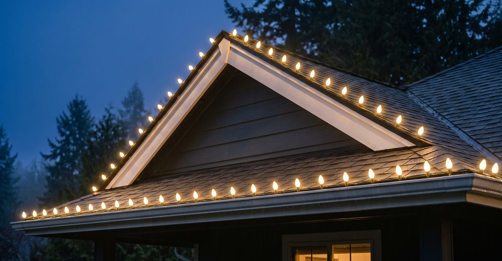
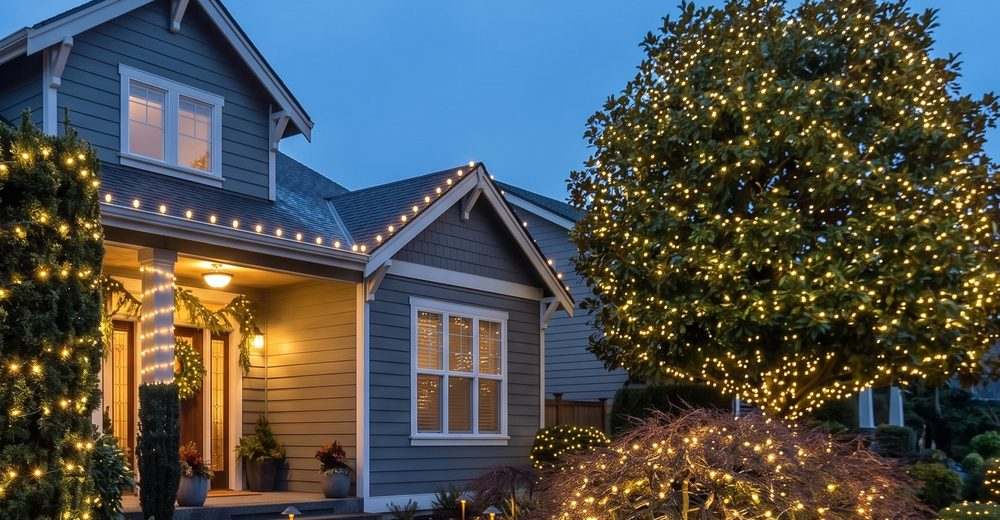
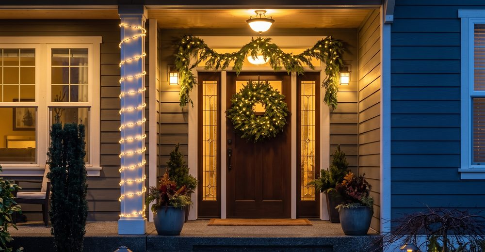
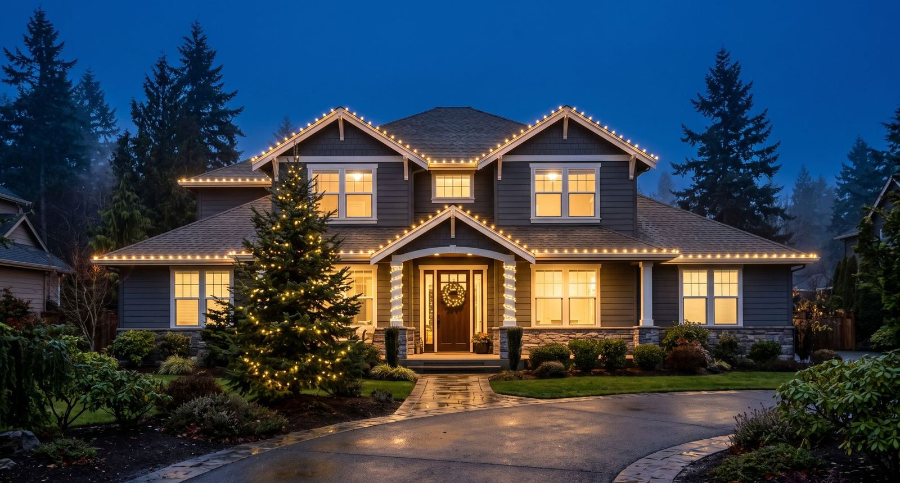

Rooflines & eaves
Commercial-grade LEDs are custom-cut to the home and attached with clips, never nails or staples.
Everett has everything from compact North Everett homes to larger properties south of Silver Lake. Louis builds each display to the home, using clipped, custom-cut light lines instead of nails or staples.
Your display is handled from the first cut to the last storage bin. Trinity supplies the lights, installs them, repairs them during the season at no charge, takes them down and stores them for next year.

Commercial-grade LEDs are custom-cut to the home and attached with clips, never nails or staples.

Wrapped trunks, lit canopies and shrubs add depth beyond the edge of the roof.

Entry details connect the roofline to the front door and finish the display.
For a compact North Everett home, the main roofline and covered entry may be enough to read clearly from the sidewalk. On a larger property with established landscaping, a lit tree or shrubs can carry the display into the yard. Start with the features you want visible from the street, then decide whether the entry needs its own accent.
On the Christmas lighting quote form, choose roofline, trees or wreaths, or call Louis to talk through the combination.

Trinity serves Mukilteo, Mill Creek, Lake Stevens, Snohomish, Marysville and nearby communities. Explore nearby service pages or use the main Snohomish County page for the full service area.
Commercial-grade LEDs, custom cutting, clip installation, free mid-season repairs, takedown and off-season storage are included.
No. Trinity uses clips made for the job so the display comes down cleanly.
Louis owns Trinity and does the work himself. You speak directly with the person handling the installation.
Use the short form on the main Christmas lighting page, or call or text 425-595-7758.
Tell Louis which rooflines, trees, shrubs or entry details you want lit.